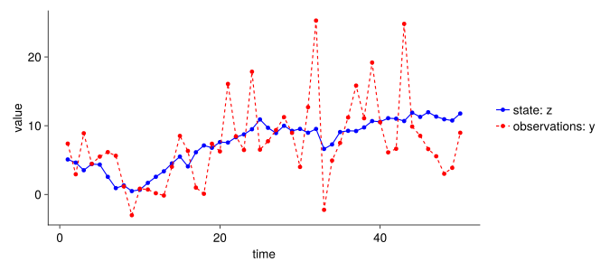

Simple State Space Model - Only Filtering
\(s(t)\): state that is modelled with a process-based model at time \(t\)
\(x(t)\): true hidden state at time \(t\)
\(y(t)\): observation at time \(t\)
\(p(x(t) | x(t-1))\): transition probability between the true states
\(p(y(t) | x(t))\): observation probability
\(p(x₀)\): initial state of the true states
\(εₜ₋₁\): process error
\(ηₜ₋₁\): observation error
1 Load packages and Makie theme
import Random
import StatsBase
using CairoMakie
using Distributions
using Statistics
set_theme!(
fontsize = 18,
Axis = (; xgridvisible = false, ygridvisible = false,
topspinevisible = false, rightspinevisible = false),
Legend = (; framevisible = false))2 Generate some data
# Random.seed!(123)
σ_p = 1.0
σ_o = 5.0
β = 1.0
α = 1.0
z₀ = 5.0
ε_t_dist = Normal(0, σ_p)
η_t_dist = Normal(0, σ_o)
ts = 1:50
z = Array{Float64}(undef, length(ts))
y = Array{Float64}(undef, length(ts))
for t in ts
z_lastt = t == 1 ? z₀ : z[t-1]
ε_t = rand(ε_t_dist)
z[t] = β * z_lastt + ε_t
η_t = rand(η_t_dist)
y[t] = α * z[t] + η_t
end
let
fig = Figure(size = (900, 400))
ax = Axis(fig[1, 1]; xlabel = "time", ylabel = "value")
scatterlines!(ts, z, color = :blue, label = "state: z")
scatterlines!(ts, y, color = :red, label = "observations: y", linestyle = :dash)
Legend(fig[1, 2], ax)
fig
end
3 Find state values
num_particles = 200
prior_dist = truncated(Normal(0, 50); )
log_prior(z) = logpdf(prior_dist, z)
log_likelihood(y, z) = logpdf(Normal(α * z, σ_o), y)
calc_weights(y, z) = log_likelihood.(y, z)
particles = rand(prior_dist, num_particles)
particle_mat = zeros(length(ts), num_particles)
ll = zeros(length(ts))
for t in ts
weights = calc_weights(y[t], particles)
max_weight = maximum(weights)
scaled_weights = exp.(weights .- max_weight)
ll[t] = mean(weights)
indices = sample(1:num_particles, StatsBase.Weights(scaled_weights), num_particles; replace = true)
particles = particles[indices]
particle_mat[t, :] = particles
particles = β .* particles .+ rand(ε_t_dist, num_particles)
end
let
fig = Figure(size = (900, 400))
ax = Axis(fig[1, 1]; xlabel = "time", ylabel = "value")
for t in ts
scatter!(fill(t, num_particles), particle_mat[t, :],
color = (:black, 0.05),
label = t == 1 ? "particles" : nothing)
end
scatterlines!(ts, z, color = :blue, label = "state: z")
scatterlines!(ts, y, color = :red, label = "observations: y", linestyle = :dash)
Legend(fig[1, 2], ax)
fig
end